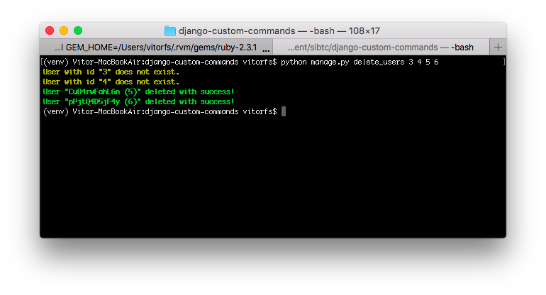
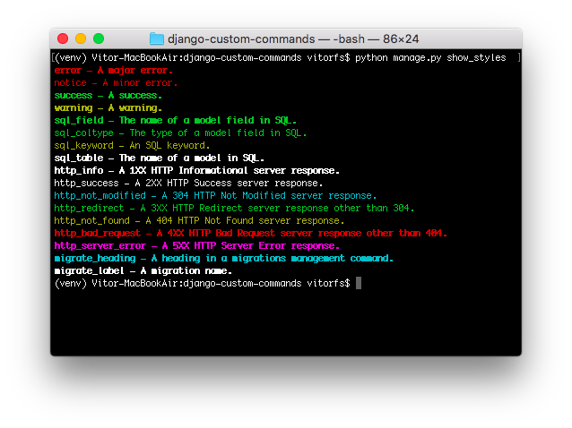

(Picture:
(Picture: Django comes with a variety of command line utilities that can be either invoked using django-admin.py or the
convenient manage.py script. A nice thing about it is that you can also add your own commands. Those management
commands can be very handy when you need to interact with your application via command line using a terminal and it can
also serve as an interface to execute cron jobs. In this tutorial you are going to learn how to code your own commands.
Introduction
Just before we get started, let’s take a moment to familiarize with Django’s command line interface. You are probably
already familiar with commands like startproject, runserver or collectstatic. To see a complete list of commands
you can run the command below:
python manage.py helpOutput:
Type 'manage.py help <subcommand>' for help on a specific subcommand.
Available subcommands:
[auth]
changepassword
createsuperuser
[contenttypes]
remove_stale_contenttypes
[django]
check
compilemessages
createcachetable
dbshell
diffsettings
dumpdata
flush
inspectdb
loaddata
makemessages
makemigrations
migrate
sendtestemail
shell
showmigrations
sqlflush
sqlmigrate
sqlsequencereset
squashmigrations
startapp
startproject
test
testserver
[sessions]
clearsessions
[staticfiles]
collectstatic
findstatic
runserver
We can create our own commands for our apps and include them in the list by creating a management/commands directory inside an app directory, like below:
mysite/ <-- project directory
|-- core/ <-- app directory
| |-- management/
| | +-- commands/
| | +-- my_custom_command.py <-- module where command is going to live
| |-- migrations/
| | +-- __init__.py
| |-- __init__.py
| |-- admin.py
| |-- apps.py
| |-- models.py
| |-- tests.py
| +-- views.py
|-- mysite/
| |-- __init__.py
| |-- settings.py
| |-- urls.py
| |-- wsgi.py
+-- manage.pyThe name of the command file will be used to invoke using the command line utility. For example, if our command was
called my_custom_command.py, then we will be able to execute it via:
python manage.py my_custom_commandLet’s explore next our first example.
Basic Example
Below, a basic example of what the custom command should look like:
management/commands/what_time_is_it.py
from django.core.management.base import BaseCommand
from django.utils import timezone
class Command(BaseCommand):
help = 'Displays current time'
def handle(self, *args, **kwargs):
time = timezone.now().strftime('%X')
self.stdout.write("It's now %s" % time)Basically a Django management command is composed by a class named Command which inherits from BaseCommand. The
command code should be defined inside the handle() method.
See how we named our module what_time_is_it.py. This command can be executed as:
python manage.py what_time_is_itOutput:
It's now 18:35:31You may be asking yourself, how is that different from a regular Python script, or what’s the benefit of it. Well, the main advantage is that all Django machinery is loaded and ready to be used. That means you can import models, execute queries to the database using Django’s ORM and interact with all your project’s resources.
Handling Arguments
Django make use of the argparse, which is part of Python’s standard
library. To handle arguments in our custom command we should define a method named add_arguments.
Positional Arguments
The next example is a command that create random user instances. It takes a mandatory argument named total, which
will define the number of users that will be created by the command.
management/commands/create_users.py
from django.contrib.auth.models import User
from django.core.management.base import BaseCommand
from django.utils.crypto import get_random_string
class Command(BaseCommand):
help = 'Create random users'
def add_arguments(self, parser):
parser.add_argument('total', type=int, help='Indicates the number of users to be created')
def handle(self, *args, **kwargs):
total = kwargs['total']
for i in range(total):
User.objects.create_user(username=get_random_string(), email='', password='123')Here is how one would use it:
python manage.py create_users 10Optional Arguments
The optional (and named) arguments can be passed in any order. In the example below you will find the definition of an argument named “prefix”, which will be used to compose the username field:
management/commands/create_users.py
from django.contrib.auth.models import User
from django.core.management.base import BaseCommand
from django.utils.crypto import get_random_string
class Command(BaseCommand):
help = 'Create random users'
def add_arguments(self, parser):
parser.add_argument('total', type=int, help='Indicates the number of users to be created')
# Optional argument
parser.add_argument('-p', '--prefix', type=str, help='Define a username prefix', )
def handle(self, *args, **kwargs):
total = kwargs['total']
prefix = kwargs['prefix']
for i in range(total):
if prefix:
username = '{prefix}_{random_string}'.format(prefix=prefix, random_string=get_random_string())
else:
username = get_random_string()
User.objects.create_user(username=username, email='', password='123')Usage:
python manage.py create_users 10 --prefix custom_useror
python manage.py create_users 10 -p custom_userIf the prefix is used, the username field will be created as custom_user_oYwoxtt4vNHR. If not prefix, it will be
created simply as oYwoxtt4vNHR – a random string.
Flag Arguments
Another type of optional arguments are flags, which are used to handle boolean values. Let’s say we want to add an
--admin flag, to instruct our command to create a super user or to create a regular user if the flag is not present.
management/commands/create_users.py
from django.contrib.auth.models import User
from django.core.management.base import BaseCommand
from django.utils.crypto import get_random_string
class Command(BaseCommand):
help = 'Create random users'
def add_arguments(self, parser):
parser.add_argument('total', type=int, help='Indicates the number of users to be created')
parser.add_argument('-p', '--prefix', type=str, help='Define a username prefix')
parser.add_argument('-a', '--admin', action='store_true', help='Create an admin account')
def handle(self, *args, **kwargs):
total = kwargs['total']
prefix = kwargs['prefix']
admin = kwargs['admin']
for i in range(total):
if prefix:
username = '{prefix}_{random_string}'.format(prefix=prefix, random_string=get_random_string())
else:
username = get_random_string()
if admin:
User.objects.create_superuser(username=username, email='', password='123')
else:
User.objects.create_user(username=username, email='', password='123')Usage:
python manage.py create_users 2 --adminOr
python manage.py create_users 2 -aArbitrary List of Arguments
Let’s create a new command now named delete_users. In this new command we will be able to pass a list of user ids and the command should delete those users from the database.
management/commands/delete_users.py
from django.contrib.auth.models import User
from django.core.management.base import BaseCommand
class Command(BaseCommand):
help = 'Delete users'
def add_arguments(self, parser):
parser.add_argument('user_id', nargs='+', type=int, help='User ID')
def handle(self, *args, **kwargs):
users_ids = kwargs['user_id']
for user_id in users_ids:
try:
user = User.objects.get(pk=user_id)
user.delete()
self.stdout.write('User "%s (%s)" deleted with success!' % (user.username, user_id))
except User.DoesNotExist:
self.stdout.write('User with id "%s" does not exist.' % user_id)Usage:
python manage.py delete_users 1Output:
User "SMl5ISqAsIS8 (1)" deleted with success!We can also pass a number of ids separated by spaces, so the command will delete the users in a single call:
python manage.py delete_users 1 2 3 4Output:
User with id "1" does not exist.
User "9teHR4Y7Bz4q (2)" deleted with success!
User "ABdSgmBtfO2t (3)" deleted with success!
User "BsDxOO8Uxgvo (4)" deleted with success!Styling
We could improve the previous example a little big by setting an appropriate color to the output message:
management/commands/delete_users.py
from django.contrib.auth.models import User
from django.core.management.base import BaseCommand
class Command(BaseCommand):
help = 'Delete users'
def add_arguments(self, parser):
parser.add_argument('user_id', nargs='+', type=int, help='User ID')
def handle(self, *args, **kwargs):
users_ids = kwargs['user_id']
for user_id in users_ids:
try:
user = User.objects.get(pk=user_id)
user.delete()
self.stdout.write(self.style.SUCCESS('User "%s (%s)" deleted with success!' % (user.username, user_id)))
except User.DoesNotExist:
self.stdout.write(self.style.WARNING('User with id "%s" does not exist.' % user_id))Usage is the same as before, difference now is just the output:
python manage.py delete_users 3 4 5 6Output:

Below a list of all available styles, in form of a management command:
from django.core.management.base import BaseCommand
class Command(BaseCommand):
help = 'Show all available styles'
def handle(self, *args, **kwargs):
self.stdout.write(self.style.ERROR('error - A major error.'))
self.stdout.write(self.style.NOTICE('notice - A minor error.'))
self.stdout.write(self.style.SUCCESS('success - A success.'))
self.stdout.write(self.style.WARNING('warning - A warning.'))
self.stdout.write(self.style.SQL_FIELD('sql_field - The name of a model field in SQL.'))
self.stdout.write(self.style.SQL_COLTYPE('sql_coltype - The type of a model field in SQL.'))
self.stdout.write(self.style.SQL_KEYWORD('sql_keyword - An SQL keyword.'))
self.stdout.write(self.style.SQL_TABLE('sql_table - The name of a model in SQL.'))
self.stdout.write(self.style.HTTP_INFO('http_info - A 1XX HTTP Informational server response.'))
self.stdout.write(self.style.HTTP_SUCCESS('http_success - A 2XX HTTP Success server response.'))
self.stdout.write(self.style.HTTP_NOT_MODIFIED('http_not_modified - A 304 HTTP Not Modified server response.'))
self.stdout.write(self.style.HTTP_REDIRECT('http_redirect - A 3XX HTTP Redirect server response other than 304.'))
self.stdout.write(self.style.HTTP_NOT_FOUND('http_not_found - A 404 HTTP Not Found server response.'))
self.stdout.write(self.style.HTTP_BAD_REQUEST('http_bad_request - A 4XX HTTP Bad Request server response other than 404.'))
self.stdout.write(self.style.HTTP_SERVER_ERROR('http_server_error - A 5XX HTTP Server Error response.'))
self.stdout.write(self.style.MIGRATE_HEADING('migrate_heading - A heading in a migrations management command.'))
self.stdout.write(self.style.MIGRATE_LABEL('migrate_label - A migration name.'))
Cron Job
If you have a task that must run periodically, like generating a report every Monday. Or let’s say you have a Web scrapper that collects data from some Website every 10 minutes. You can define this code as a management command and simply add it to your server’s crontab like this:
# m h dom mon dow command
0 4 * * * /home/mysite/venv/bin/python /home/mysite/mysite/manage.py my_custom_commandThe example above will execute the my_custom_command every day at 4 a.m.
Further Reading
The examples above should be enough to get you started. More advanced usage will boil down to knowing how to use the argparse features. And of course, Django’s official documentation on management commands is the best resource.
You can find all the code used in this tutorial on GitHub.
 How to Use Celery and RabbitMQ with Django
How to Use Celery and RabbitMQ with Django
 How to Extend Django User Model
How to Extend Django User Model
 How to Setup a SSL Certificate on Nginx for a Django Application
How to Setup a SSL Certificate on Nginx for a Django Application
 How to Deploy a Django Application to Digital Ocean
How to Deploy a Django Application to Digital Ocean